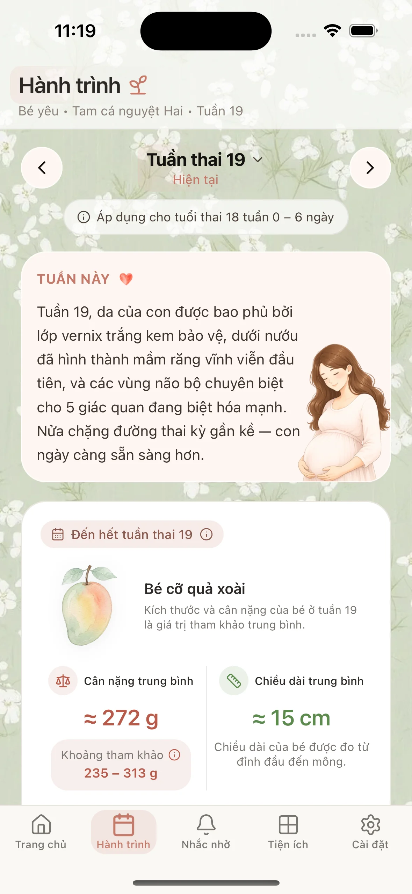
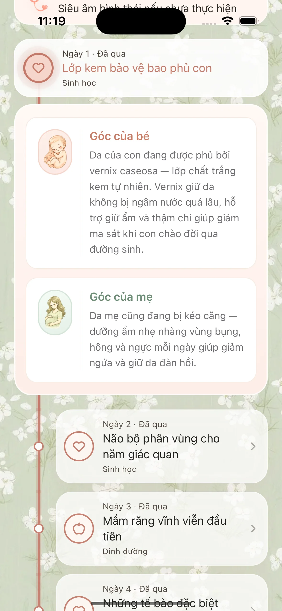
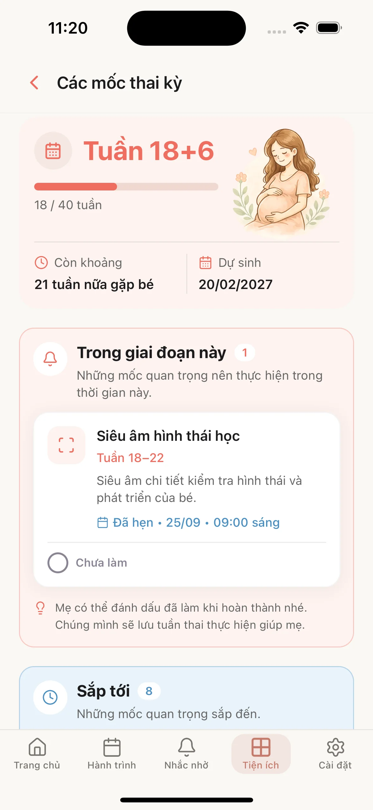
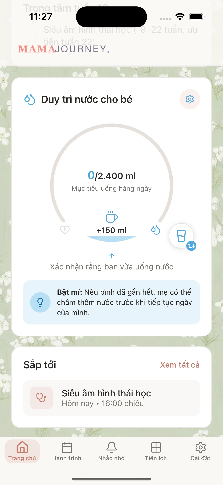
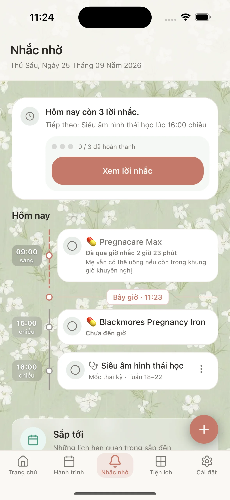
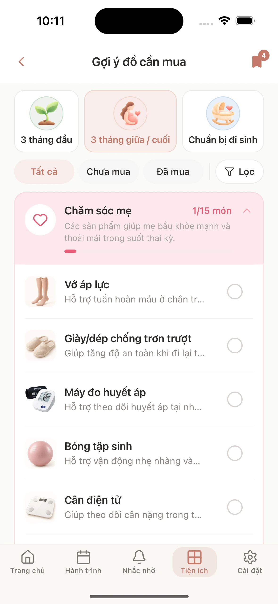
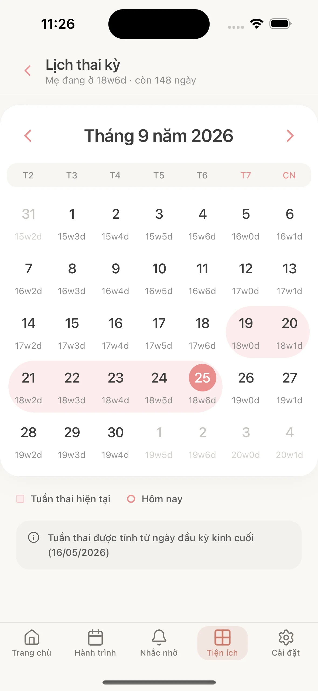
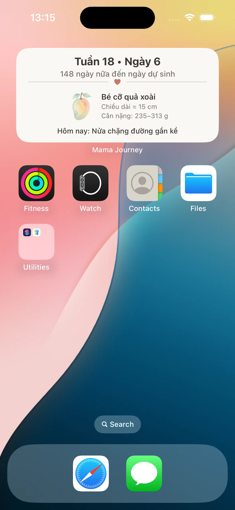

Hành trình thai kỳ
Mỗi tuần, một hành trình mới.
Mỗi tuần thai kỳ mang đến một hành trình riêng cho mẹ và bé, với những điều đáng nhớ và những khoảnh khắc nhỏ để cùng nhìn lại.

Mama Journey
Mama đồng hành cùng mẹ qua từng tuần thai kỳ với những thông tin, gợi ý và khoảnh khắc đáng nhớ trên hành trình làm mẹ.
Tải Mama trên App StoreẢnh màn hình thật chưa có. Thêm assets/app/home.webp để hiển thị Trang chủ Mama Journey.
Hành trình thai kỳ
Mỗi tuần thai kỳ mang đến một hành trình riêng cho mẹ và bé, với những điều đáng nhớ và những khoảnh khắc nhỏ để cùng nhìn lại.

Mỗi ngày cùng Mama
Mama mang đến những nội dung nhỏ mỗi ngày, phù hợp với hành trình mẹ đang trải qua.

Những cột mốc đáng nhớ
Những cột mốc trong thai kỳ giúp mẹ nhìn lại hành trình đã đi qua và biết mình đang ở đâu trên chặng đường phía trước.

Chăm mẹ mỗi ngày
Một lời nhắc nhỏ trong ngày để mẹ nhớ quan tâm đến việc uống nước và chăm sóc bản thân.

Nhắc nhở
Mama gom các lời nhắc mẹ đã tạo — việc đến giờ trong ngày và những mốc sắp tới — để mẹ thấy những gì còn chưa hoàn thành.

Chuẩn bị cho bé
Mama giúp mẹ lưu lại những món đồ cần chuẩn bị và theo dõi danh sách mua sắm trong hành trình đón bé.

Theo dõi hành trình
Lịch thai kỳ giúp mẹ nhìn lại các tuần và những mốc đang diễn ra trong hành trình của mình.

Trên màn hình chính
Widget Mama Journey cho mẹ xem nhanh tuần thai, số ngày còn lại đến ngày dự sinh và một cập nhật nhỏ của hôm nay mà không cần mở app.

Về Mama
Mama được tạo ra để đồng hành cùng mẹ trong suốt hành trình thai kỳ — từ những thay đổi đầu tiên, những tuần thai đang lớn lên, đến những điều mẹ muốn chuẩn bị trước ngày gặp con.
Những thông tin cần thiết được trình bày rõ ràng, để mẹ dễ theo dõi trong hành trình mỗi ngày.
Nội dung và trải nghiệm được xây dựng xoay quanh hành trình thai kỳ của mẹ.
Mama ưu tiên một trải nghiệm bình tĩnh, gần gũi và dễ sử dụng.
Cách Mama đồng hành
Mama hướng đến việc trình bày thông tin thai kỳ theo cách rõ ràng, dễ tiếp cận và phù hợp với từng giai đoạn.
Mama Journey
Đồng hành cùng mẹ qua từng tuần thai kỳ, từng ngày và những điều nhỏ bé đáng nhớ.
Tải Mama trên App Store